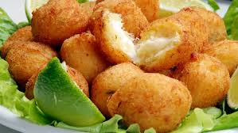

Bolinho de peixe

Ingredientes:
- 1 xícara de sobra de peixe (pescada, robalo) assado ou refogado
- 1 xícara de cenoura em cubinhos cozida
- 1/2 cebola picada
- 1 ovo
- 3 colheres (sopa) de queijo parmesão ralado
- 3 colheres (sopa) de farinha de trigo
- 1 colher (chá) de sal
- Salsinha a gosto
- 1 colher (chá) de fermento em pó
- Retire os espinhos do peixe, e desfie.
- Se o peixe for assado,acrescente 2 colheres (sopa) de leite líquido para umedecer.
- Misture bem todos os ingredientes,deixando o fermento em pó por último.
- Modele os bolinhos com as mãos molhadas para não grudar.
- Frite em óleo quente.
- Pode substituir a cenoura por batata ou vagem.
- Se gostar acrescente uma folha de coentro picada.